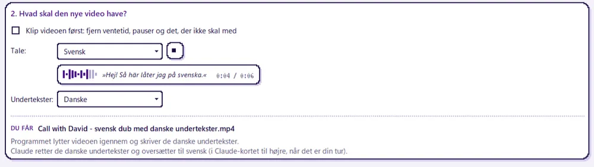
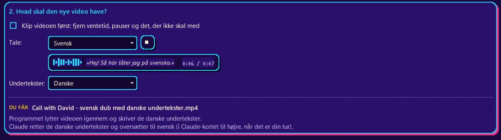

Undertekster og dub på fire sprog
Programmet lytter videoen igennem og skriver teksten. AI-assistenten retter den og oversætter til dansk, svensk, norsk eller engelsk. Vælg undertekster, ny tale eller begge dele, og tryk på ▶ for at høre stemmen, før du går i gang.

